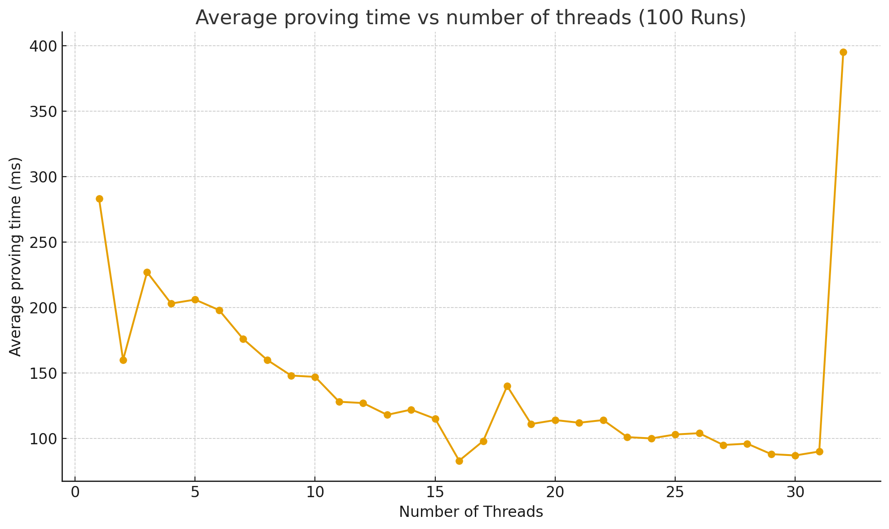

V1.2.0-MANTLE
| Field | Value |
|---|---|
| Name | Mantle |
| Slug | 229 |
| Status | deprecated |
| Type | RFC |
| Category | Standards Track |
| Editor | Thomas Lavaur thomaslavaur@logos.co |
| Contributors | Filip Dimitrijevic filip@logos.co |
Timeline
- 2026-07-03 —
709cf7f— Bedrock-RFC: Remove Concept of a Session (#365) - 2026-05-28 —
d45eed2— Chore: mirror blochain specs into github/mdbook (#347)
Owner: @Thomas Lavaur
Reviewers: @Mehmet @Marcin Pawlowski @Daniel Sanchez Quiros @Gusto Bacvinka @Youngjoon Lee @Daniel Kashepava @David Rusu
Revision History
| Version | Changes | Date |
|---|---|---|
| 1.0.0 | Initial revision. | 2025-11-17 |
| 1.1.0 | ? | 2026-02-06 |
| 1.2.0 | Removed DA references. Removed notions of Sovereignty and Rollups and used Zones for simplicity. Removed Nomos from specifications and DSTs. Added bridging and decentralized sequencing for channels. | 2026-03-20 |
Introduction
Mantle is a foundational element of Bedrock, designed to provide a minimal and efficient execution layer that connects together Bedrock Services in order to provide the necessary functionality for Zones. It can be viewed as the system call interface of Bedrock, exposing a safe and constrained set of Operations to interact with lower-level Bedrock services, similar to syscalls in an operating system.
Mantle Transactions provide Operations for Zones and blockchain Services to interact with Bedrock. For example, a Zone sequencer posting an update to Bedrock, or a node operator declaring its participation in the Blend Network, would be done through the corresponding Operations within a Mantle Transaction.
Mantle manages assets using a note-based ledger that follows an UTXO model. Each Mantle Transaction includes a Ledger Transaction, and any excess balance serves as the fee payment.
Overview
Mantle Transaction
The features of the Logos Blockchain are exposed through Mantle Transactions. Each transaction can contain zero or more Operations and one Ledger Transaction. Mantle Transactions enable users to execute multiple Operations atomically. The Ledger Transaction serves two purposes: it pays the transaction fee and allows users to issue transfers.
Mantle Operations
Logos Blockchain features are exposed through Mantle Operations, which can be combined and executed together in a single Mantle Transaction atomically. These Operations enable functions such as on-chain data posting, Cross-Zone interactions, SDP interaction, and leader reward claims.
Mantle Ledger
The Mantle Ledger enables asset transfers using a transparent UTXO model. While a Ledger Transaction can consume more tokens than it creates, the Mantle Transaction excess balance must exactly pay for the fees.
Transaction Fees
Mantle Transaction fees are derived from a gas model. The Logos Blockchain has two different gas markets, accounting for permanent data storage, and execution costs. Each Operation and Ledger Transaction has an associated Execution Gas cost. Users can specify their gas prices in their Mantle Transactions to incentivize the network to include their transaction.
| Gas Market | Charged On | Pricing Basis |
|---|---|---|
| Execution Gas | Ledger Transaction and Operations | Fixed per Operation |
| Permanent Storage Gas | Signed Mantle Transaction | Proportional to encoded size |
Mantle Transaction
Mantle Transactions form the core of Mantle, enabling users to combine multiple Operations to access different functions. Each transaction contains zero or more Operations plus a Ledger Transaction. The system executes all Operations atomically, while using the Mantle Transaction's excess balancecalculated as the difference between the consumed and created value as the fee payment.
class MantleTx:
ops: list[Op]
ledger_tx: LedgerTx # excess balance is used for fee payment
permanent_storage_gas_price: TokenValue # See the note section
execution_gas_price: TokenValue
class Op:
opcode: byte
payload: bytes
def mantle_txhash(tx: MantleTx) -> ZkHash:
tx_bytes = encode(tx)
h = Hasher()
h.update(FiniteField(b"MANTLE_TXHASH_V1", byte_order="little", modulus=p))
for i in range((len(tx_bytes)+30)//31):
chunk = tx_bytes[i*31:(i+1)*31]
fr = FiniteField(chunk, byte_order="little", modulus=p)
h.update(fr)
return h.digest()
The hash function used, as well as other cryptographic primitives like ZK proofs and signature schemes, are described in Common Cryptographic Components.
A Mantle Transaction must include all relevant signatures and proofs for each Operation, as well as for the Ledger Transaction.
class SignedMantleTx:
tx: MantleTx
op_proofs: list[OpProof | None] # each Op has at most 1 associated proof
ledger_tx_proof: ZkSignature # ZK proof of ownership of the spent notes
Each proof (op proof and signature) must be cryptographically bound to the MantleTx through the mantle_txhash to prevent replay attacks. This binding is achieved by including the MantleTx hash as a public input in every ZK proof.
The transaction fee is a sum of two components: the multiplication of the total Execution Gas by the execution_gas_price, and the total size of the encoded signed Mantle Transaction multiplied by the permanent_storage_gas_price.
def gas_fees(signed_tx: SignedMantleTx) -> int:
mantle_tx = signed_tx.tx
permanent_storage_fees = len(encode(signed_mantle_tx)) * mantle_tx.permanent_storage_gas_price
execution_fees = execution_gas(mantle_tx.ledger_tx) * mantle_tx.execution_gas_price
for op in mantle_tx.ops:
# Compute the execution gas of this operation as defined
# in the gas cost determination specification.
execution_fees += execution_gas(op) * mantle_tx.execution_gas_price
return execution_fees + permanent_storage_fees
Validation
Given
signed_tx = SignedMantleTx(
tx=MantleTx(ops, permanent_storage_gas_price, execution_gas_price, ledger_tx),
op_proofs,
ledger_tx_proof
)
Mantle validators will ensure the following:
- The ledger transaction is valid according to Ledger Validation.
validate_ledger_tx(ledger_tx, ledger_tx_proof, mantle_txhash(tx)) - We have a proof or a None value for each operation.
assert len(op_proofs) == len(ops) - Each Operation is valid.
for op, op_proof in zip(ops, op_proofs): assert op.opcode in MANTLE_OPCODES validate_mantle_op(mantle_txhash(tx), op.opcode, op.payload, op_proof) def validate_mantle_op(txhash, opcode, payload, op_proof): if opcode == CHANNEL_INSCRIBE: validate_channel_inscribe(txhash, payload, op_proof) # elif opcode == ... # ... - The Mantle Transaction excess balance pays for the transaction fees.
tx_fee = gas_fees(signed_tx) # Not an unsigned int assert tx_fee == get_transaction_balance(signed_tx) def get_transaction_balance(signed_tx: SignedMantleTx) -> int: balance = 0 # It's important to not use unsigned int here to avoid # overflow vulnerabilities for op in signed_tx.tx.ops: if op.opcode == LEADER_CLAIM: balance += get_leader_reward() if op.opcode == CHANNEL_DEPOSIT: balance -= get_channel_deposit_amount(op) if op.opcode == CHANNEL_WITHDRAW: balance += get_channel_withdrawal_amount(op) for inp in signed_tx.tx.ledger_tx.inputs: balance += get_value_from_note_id(inp) for out in signed_tx.tx.ledger_tx.outputs: balance -= out.value return balance
Execution
Given
SignedMantleTx(
tx=MantleTx(ops, permanent_storage_gas_price, execution_gas_price, ledger_tx),
op_proofs,
ledger_tx_proof
)
Mantle Validators execute the following:
- Execute the Ledger Transaction as described in Ledger Execution.
- Execute sequentially each Operation in ops according to its opcode.
Operations
Opcodes
| Operation | Opcode | Description |
|---|---|---|
| CHANNEL_INSCRIBE | 0x00 | Write a message permanently onto Mantle. |
| RESERVED | 0x01 | |
| CHANNEL_CONFIG | 0x02 | Configure a channel |
| CHANNEL_DEPOSIT | 0x03 | Deposit assets into a channel |
| CHANNEL_WITHDRAW | 0x04 | Withdraw assets from a channel |
| RESERVED | 0x05 - 0x1F | |
| SDP_DECLARE | 0x20 | Declare intention to participate as a node in a Bedrock Service, locking funds as collateral. |
| SDP_WITHDRAW | 0x21 | Withdraw participation from a Bedrock Service, unlocking your funds in the process. |
| SDP_ACTIVE | 0x22 | Signal that you are still an active participant of a Bedrock Service. |
| RESERVED | 0x23 - 0x2F | |
| LEADER_CLAIM | 0x30 | Claim leader reward anonymously. |
| RESERVED | 0x31 - 0xFF |
Channel Operations
Channels allow Zones to post their updates on chain. Channels form virtual chains that overlay on top of the Cryptarchia blockchain. Clients and Followers of a Zone can watch its channel to learn the state of that Zone. Each channel has an associated balance, enabling bridging between Zones and Bedrock.
Message Ordering
Channels form virtual chains by having each message reference its parent message. The order of messages in these channels is enforced by the sequencer by building a hash chain of messages, i.e. new messages reference the previous messages through a parent hash. Given that Cryptarchia has long finality times, these message parent references allow Zone sequencers to continue to post new updates to channels without having to wait for finality. No matter how Cryptarchia forks and reorgs, the channel messages from honest sequencers will eventually be re-included in a way that satisfies the virtual chain order.
The first time a message is sent to an unclaimed channel, the key that signs the initial message becomes the only accredited key in the list (Note that this key may correspond to a threshold signature key). Accredited keys of a channel forms a committee that can configure the channel, withdraw funds and take turns to write messages to that channel following a round-robin algorithm. Configuring a channel includes modifying the list of accredited keys, the round-robin parameters and the required number of signatures to withdraw funds or establish a new configuration.
Validators must maintain the following state to process channel Operations:
channels: dict[ChannelId, ChannelState] # ChannelId is 32 bytes
class ChannelState:
# Channel Configuration
accredited_keys: list[Ed25519PublicKey] # limited to 65 535 keys
configuration_threshold: u16 # indicating how many keys are
# required to update the configuration
# Message Ordering
tip_hash: hash
# Decentralized Sequencing
tip_slot: Slot
tip_sequencer: u16 # indicating the actual
# sequencer position in the list of accredited keys
tip_sequencer_starting_slot: Slot
posting_timeframe: u32 # number of slots (0 = infinity)
posting_timeout: u32 # number of slots (0 = no timeout)
# Bridging
balance: TokenValue # See the Note section for its precision
withdraw_threshold: u16 # indicating how many keys are
# required to withdraw funds from the channel
def default_channel(block_slot: Slot, keys: list[Ed25519PublicKey])
-> ChannelState:
return ChannelState(
tip_hash = ZERO,
tip_slot = block_slot,
accredited_keys = keys,
tip_sequencer = 0,
tip_sequencer_starting_slot = block_slot,
posting_timeframe = 0,
posting_timeout = 0,
configuration_threshold = 1,
withdraw_threshold = 1)
Note that the user chooses the ChannelId mapping to the ChannelState (but its restricted to 32 bytes). We don't currently impose restrictions on it, but we may do so in the future to prevent undesirable behaviors.
Decentralized Sequencing
To determine which sequencer is currently authorized to send messages, we use a round-robin algorithm. When a message is posted to a channel, the following algorithm is used to determine who the sequencer is:
# Round Robin algorithm determining the new sequencer index and the
# new sequencer starting slot
def round_robin(block_slot: Slot, channel: ChannelState) -> (u16,u64):
elapsed_slots = block_slot - channel.tip_slot
if elapsed_slots >= channel.posting_timeout && channel.posting_timeout != 0:
# Get the number of sequencers that get timed out
sequencers_timed_out = elapsed_slots // channel.posting_timeout
index = (channel.tip_sequencer + sequencers_timed_out)
% len(channel.accredited_keys)
starting_slot = channel.tip_slot
+ sequencers_timed_out * channel.posting_timeout
else:
# Get the number of timeframes elapsed to get who is the sequencer
tip_sequencer_duration = block_slot - channel.tip_sequencer_starting_slot
index = (channel.tip_sequencer
+ (tip_sequencer_duration // channel.posting_timeframe))
% len(channel.accredited_keys)
starting_slot = channel.tip_sequencer_starting_slot
+ (tip_sequencer_duration // channel.posting_timeframe)
* channel.posting_timeframe
return (index, starting_slot)
CHANNEL_INSCRIBE
Write a message to a channel with the message data being permanently stored on the Logos Blockchain.
Payload
class Inscribe:
channel: ChannelId # 32 bytes Channel being written to
inscription : bytes # Message to be written on the blockchain
parent: hash # Previous message in the channel
signer: Ed25519PublicKey # Identity of message sender
Proof
Ed25519Signature
Execution Gas
Channel Inscribe Operations have a fixed Execution Gas cost of EXECUTION_CHANNEL_INSCRIBE_GAS. See [Analysis] Gas Cost Determination for the Execution Gas values.
Validation
Given
txhash: zkhash
msg: Inscribe
sig: Ed25519Signature
channels: dict[ChannelId, ChannelState]
block_slot: Slot
Validate
if msg.channel in channels:
chan = channels[msg.channel]
current_sequencer_index = round_robin(block_slot, chan)[0]
# Ensure the signer is the one authorized to write to the channel
assert msg.signer == chan.accredited_keys[current_sequencer_index]
# Ensure message is continuing the channel sequence
assert msg.parent == chan.tip_hash
else:
# Channel will be created automatically upon execution
# Ensure that this message is the genesis message (parent == ZERO)
assert msg.parent == ZERO
# Ensure the msg signer signature
assert Ed25519_verify(txhash, msg.signer, sig)
Execution
Given
msg: Inscribe
sig: Ed25519Signature
channels: dict[ChannelId, ChannelState]
block_slot: Slot
Execute
- If the channel does not exist, create it just-in-time.
if msg.channel not in channels: channels[msg.channel] = default_channel(block_slot, [msg.signer]) - Update the channel sequencer.
chan = channels[msg.channel] (new_sequencer_index, new_sequencer_starting_slot) = round_robin( block_slot, chan) chan.tip_sequencer_starting_slot = new_sequencer_starting_slot chan.tip_sequencer = new_sequencer_index - Update the channel tip.
chan = channels[msg.channel] chan.tip_hash = hash(encode(msg)) chan.tip_slot = block_slot
Example
# Build the inscription
greeting = Inscription(
channel=CHANNEL_EARTH,
inscription=b"Live long and prosper",
parent=ZERO
signer=spock_pk
)
# Wrap it in a transaction
tx = MantleTx(
ops=[Op(opcode=CHANNEL_INSCRIBE, payload=encode(greeting))],
permanent_storage_gas_price=150,
execution_gas_price=70,
ledger_tx=LedgerTx(inputs=[<spocks_note_id>], outputs=[<change_note>]),
)
# Sign the transaction
signed_tx = SignedMantleTx(
tx=tx,
op_proofs=[Ed25519_sign(mantle_txhash(tx), spock_sk)]
ledger_tx_proof=tx.ledger_tx.prove(spock_sk)
)
# Send the transaction to the mempool
mempool.push(signed_tx)
CHANNEL_CONFIG
Overwrite the configuration of a channel.
Payload
class ChannelConfig:
channel: ChannelId
keys: list[Ed25519PublicKey]
posting_timeframe: u32
posting_timeout: u32
configuration_threshold: u16
withdraw_threshold: u16
Proof
class ChannelConfigOpProof:
signatures: list[Ed25519Signature] # signatures from configuration_threshold
indexes: list[u16] # signatures of accredited keys with their index.
# indexes must be ordered from smallest to
# biggest without duplication
Execution Gas
Channel Config Operations have a linear Execution Gas cost equal to EXECUTION_CHANNEL_CONFIG_GAS * configuration_threshold. See [Analysis] Gas Cost Determination for the Execution Gas values.
Validation
Given
txhash: zkhash
config: ChannelConfig
proof: ChannelConfigOpProof
channels: dict[ChannelId, ChannelState]
Validate
assert len(proof.signatures) == len(proof.indexes)
assert config.configuration_threshold > 0
assert config.withdraw_threshold > 0
assert len(config.keys) > 0
assert len(config.keys) < 2^16
if config.channel in channels:
chan = channels[config.channel]
# Check there are enough signatures
assert len(proof.signatures) == chan.configuration_threshold
# Check that indexes are ordered to avoid duplication
for i in range(len(proof.indexes)-1):
assert proof.indexes[i] < proof.indexes[i+1]
for sig, idx in zip(proof.signatures, proof.indexes):
# and at the same time that chan.accredited_keys[idx] isn't out of bound
assert Ed25519_verify(txhash, chan.accredited_keys[idx], sig)
Execution
Given
config: ChannelConfig
channels: dict[ChannelId, ChannelState]
block_slot: Slot
Execute
- If the channel does not exist, create it just-in-time.
if config.channel not in channels:
channels[config.channel] = default_channel(block_slot, config.keys)
- Update the configuration.
chan = channels[config.channel]
# Update Channel Configuration Parameters
chan.accredited_keys = config.keys
chan.configuration_threshold = config.configuration_threshold
# Update Decentralized Sequencing Parameters
chan.tip_sequencer = 0
chan.tip_sequencer_starting_slot = block_slot
chan.posting_timeframe = config.posting_timeframe
chan.posting_timeout = config.posting_timeout
# Update Bridging Parameters
chan.withdraw_threshold = config.withdraw_threshold
- Update the channel tip.
chan = channels[config.channel]
chan.tip_slot = block_slot
chan.tip_hash = hash(encode(config))
Example
Suppose the unique sequencer of Zone A wants to add a key to the list of accredited keys:
# Given a key to add
new_sequencer_pk: Ed25519PublicKey
# The unique sequencer encodes the update and builds the payload
config = ChannelConfig(
channel=ZONE_A,
keys=[old_sequencer_pk, new_sequencer_pk],
posting_timeframe = 5000,
posting_timeout = 500,
configuration_threshold = 2,
withdraw_threshold = 1
)
tx = MantleTx(
ops=[Op(opcode=CHANNEL_CONFIG, payload=encode(config))],
permanent_storage_gas_price=150,
execution_gas_price=70,
ledger_tx=LedgerTx(inputs=[old_sequencer_funds], outputs=[<change note>])
)
signed_tx = SignedMantleTx(
tx=tx,
op_proofs=[[Ed25519_sign(mantle_txhash(tx), old_sequencer_sk)], [0]]]
ledger_tx_proof=tx.ledger_tx.prove(old_sequencer_sk),
)
CHANNEL_DEPOSIT
Deposit funds to a channel, reducing the Mantle Transaction balance.
Payload
class ChannelDeposit:
channel: ChannelId
amount: TokenValue
metadata: bytes
Proof
None # Indirectly signed through the Ledger Transaction signature
Execution Gas
Channel Deposit Operations have a fixed Execution Gas cost of EXECUTION_CHANNEL_DEPOSIT_GAS. See [Analysis] Gas Cost Determination for the Execution Gas values.
Validation
Given
deposit: ChannelDeposit
channels: dict[ChannelId, ChannelState]
Validate
assert deposit.channel in channels
Execution
Given
deposit: ChannelDeposit
channels: dict[ChannelId, ChannelState]
Execute
channels[deposit.channel].balance += deposit.amount
Example
Suppose Alice wants to make a deposit of 50 tokens on Zone A.
# Alice encodes her deposit
deposit = ChannelDeposit(
channel=ZONE_A,
amount=50,
metadata=b"deposit to address: 0x..."
)
tx = MantleTx(
ops=[Op(opcode=CHANNEL_DEPOSIT, payload=encode(deposit))],
permanent_storage_price=150,
execution_gas_price=70,
ledger_tx=LedgerTx(inputs=[Alice_funds], outputs=[<change note>])
)
signed_tx = SignedMantleTx(
tx=tx,
op_proofs=None,
ledger_tx_proof=tx.ledger_tx.prove(Alice_sk)
)
Note that the Zone may wait for the deposit to be finalized before interpreting the deposit in order to guarantee that the deposit will occur on-chain and won't be removed due to reorganization of the chain.
CHANNEL_WITHDRAW
Withdraw funds from a channel, increasing the Mantle Transaction balance.
Payload
class ChannelWithdraw:
channel: ChannelId
amount: TokenValue
Proof
class ChannelWithdrawOpProof:
signatures: list[Ed25519Signature] # signature from withdraw_threshold keys
indexes: list[int] # signatures of accredited keys with their index.
# indexes must be ordered from smallest to
# biggest without duplication
Execution Gas
Channel Withdraw Operations have a linear Execution Gas cost equal to EXECUTION_CHANNEL_WITHDRAW_GAS * withdraw_threshold. See [Analysis] Gas Cost Determination for the Execution Gas values.
Validation
Given
txhash: zkhash
withdrawal: ChannelWithdraw
proof: ChannelWithdrawOpProof
channels: dict[ChannelId, ChannelState]
Validate
# Check that the channel exists
assert withdrawal.channel in channels
chan = channels[withdrawal.channel]
# Check that the channel has enough funds
assert chan.balance >= withdrawal.amount
# Check that there are enough signatures
assert len(proof.signatures) == len(proof.indexes)
assert len(proof.signatures) == chan.withdraw_threshold
# Check that every index is unique
assert len(proof.indexes) == len(set(proof.indexes))
# Check the signatures
for sig, idx in zip(proof.signatures, proof.indexes):
assert Ed25519_verify(txhash, chan.accredited_keys[idx], sig)
Execution
Given
withdrawal: ChannelWithdraw
channels: dict[ChannelId, ChannelState]
Execute
channels[withdrawal.channel].balance -= withdrawal.amount
Example
Suppose the unique sequencer of Zone A wants to withdraw 50 tokens.
# Sequencer encodes his withdrawal
withdrawal = ChannelWithdraw(
channel=ZONE_A,
amount=50
)
tx = MantleTx(
ops=[Op(opcode=CHANNEL_WITHDRAW, payload=encode(withdrawal))],
permanent_storage_price=150,
execution_gas_price=70,
ledger_tx=LedgerTx(inputs=[Sequencer_funds], outputs=
[<withdraw_funds>, <change note>])
)
signed_tx = SignedMantleTx(
tx=tx,
op_proofs=[[[Ed25519_sign(mantle_txhash(tx), sequencer_sk)],[0]]],
ledger_tx_proof=tx.ledger_tx.prove(Sequencer_note_sk)
)
Service Declaration Protocol (SDP) Operations
These Operations implement the Service Declaration Protocol.
Validators must keep the following state when implementing SDP Operations:
locked_notes: dict[NoteID, LockedNote]
declarations: dict[DeclarationID, DeclarationInfo]
class LockedNote:
declarations: set[DeclarationID]
locked_until: BlockNumber
Common SDP Structures
class ServiceType(Enum):
BN="BN" # Blend Network
class Locator(str):
def validate(self):
assert len(self) <= 329
assert validate_multiaddr(self)
class MinStake:
stake_threshold: int # stake value
timestamp: int # block number
class ServiceParameters:
lock_period: int # number of blocks
inactivity_period: int # number of blocks
retention_period: int # number of blocks
timestamp: int # block number
class DeclarationInfo:
service: ServiceType
locators: list[Locator]
provider_id: Ed25519PublicKey
zk_id: ZkPublicKey
locked_note_id: NoteId
created: BlockNumber
active: BlockNumber
withdrawn: BlockNumber
# SDP ops updating a declaration must use monotonically increasing nonces
nonce: int
SDP_DECLARE
The service registration follows the definition given in Service Declaration Protocol - Declaration Message:
Payload
class DeclarationMessage:
service_type: ServiceType
locators: list[Locator]
provider_id: Ed25519PublicKey
zk_id: ZkPublicKey
locked_note_id: NoteId
Locked notes are introduced in Locked notes and serve as Service collaterals. They cannot be spent before the owner withdraw its participation from the declared service(s).
Proof
class DeclarationProof:
zk_sig: ZkSignature # signature proving ownership over
# locked note and zk_id
provider_sig: Ed25519Signature # signature proving ownership of provider key
see: Zero Knowledge Signature Scheme (ZkSignature).
Execution Gas
SDP Declare Operations have a fixed Execution Gas cost of EXECUTION_SDP_DECLARE_GAS. See [Analysis] Gas Cost Determination for the Execution Gas values.
Validation
Given
txhash: zkhash # the txhash of the transaction we are validating
declaration: DeclarationMessage # the declaration we are validating
proof: DeclarationProof
min_stake: MinStake # the (global) minimum stake setting
ledger: Ledger # the set of unspent notes
locked_notes: dict[NoteId, LockedNote]
declarations: dict[NoteId, DeclarationInfo]
Validate
The declaration is verified according to Service Declaration Protocol - Declare.
- Ensure ownership over the locked note, zk_id and provider_id.
assert ZkSignature_verify( txhash, proof.zk_sig, [note.public_key, declaration.zk_id] ) assert Ed25519_verify(txhash, proof.provider_sig, provider_id) - Ensure declaration does not already exist.
assert declaration_id(declaration) not in declarations - Ensure it has no more than 8 locators.
assert len(declaration.locators) <= 8 - Ensure locked note exists and value of locked note is sufficient for joining the service.
assert ledger.is_unspent(declaration.locked_note_id) note = ledger.get_note(declaration.locked_note_id) assert note.value >= min_stake.stake_threshold - Ensure the note has not already been locked for this service.
if declaration.locked_note in locked_notes: locked_note = locked_notes[declaration.locked_note] services = [declarations[declare_id] for declare_id in locked_note.declarations] assert declaration.service_type not in services
Execution
Given
declaration: DeclarationMessage # the declaration we are executing
service_parameters: dict[ServiceType, ServiceParameters]
current_block_height: int
locked_notes : dict[NoteId, LockedNote]
Execute
- Create the locked note state if it doesn't already exist.
if declaration.locked_note not in locked_notes: locked_notes[declaration.locked_note_id] = \ LockedNote(declarations=set(), locked_until=0) locked_note = locked_notes[declaration.locked_note_id] - Update the locked notes timeout using this services lock period.
lock_period = service_parameters[declaration.service_type].lock_period service_lock = current_block_height + lock_period locked_note.locked_until = max(service_lock, locked_note.locked_until) - Add this declaration to the locked note.
declare_id = declaration_id(declaration) locked_note.declarations.add(declare_id) - Store the declaration as explained in Service Declaration Protocol - Declaration Storage.
declarations[declare_id] = DeclarationInfo( service: declaration.service locators: declaration.locators provider_id: declaration.provider_id zk_id: declaration.zk_id locked_note_id: declaration.locked_note_id declaration, created=current_block_height, active=current_block_height, withdrawn=0 nonce=0 )
Example
# Assume `alice_note` is in the ledger:
alice_note = Utxo(
txhash=0x2948904F2F0F479B8F8197694B30184B0D2ED1C1CD2A1EC0FB85D299A192A447,
output_number=3,
note=Note(value=500, public_key=alice_pk_1),
)
# Alice wishes to lock it to join the Blend network
declaration=DeclarationMessage(
service_type=ServiceType.BN,
locators=["/ip4/203.0.113.10/tcp/4001/p2p"],
provider_id=alice_provider_pk,
zk_id=alice_pk_2,
locked_note_id=alice_note.id()
)
tx = MantleTx(
ops=[Op(opcode=SDP_DECLARE, payload=encode(declaration))],
permanent_storage_gas_price=150,
execution_gas_price=70,
ledger_tx=LedgerTx(inputs=[fee_note_id], outputs=[]),
)
txhash = mantle_txhash(tx)
declaration_proof = DeclarationProof(
# proof of ownership of the staked note and zk_id
zk_sig=ZkSignature([alice_sk_1, alice_sk_2], txhash),
# proof of ownership of the provider id
provider_sig=Ed25519Signature(alice_provider_sk, txhash),
)
SignedMantleTx(
tx=tx,
ledger_tx_proof=LedgerTxProof,
op_proofs=[declaration_proof],
ledger_proof=prove_ledger_tx(tx.ledger_tx, [alice_sk_1]),
)
SDP_WITHDRAW
The service withdrawal follows the definition given in Service Declaration Protocol - Withdraw Message.
Payload
class WithdrawMessage:
declaration: DeclarationID
locked_note_id: NoteId
nonce: int
Proof
A signature from the zk_id and the locked note pk attached to the declaration is required for withdrawing from a service, (see Zero Knowledge Signature Scheme (ZkSignature)).
ZkSignature
Execution Gas
SDP Withdraw Operations have a fixed Execution Gas cost of EXECUTION_SDP_WITHDRAW_GAS. See [Analysis] Gas Cost Determination for the Execution Gas values.
Validation
Given
txhash: zkhash # Mantle transaction hash of the tx containing this operation
withdraw: WithdrawMessage
signature: ZkSignature
block_height: int # block height of the current block
ledger: Ledger
locked_notes: dict[NoteId, LockedNote]
declarations: dict[DeclarationID, DeclarationInfo]
Validate
- Ensure that the locked note exists, is locked and bound to this declaration.
assert ledger.is_unspent(withdraw.locked_note_id) assert withdraw.locked_note_id in locked_notes locked_note = locked_notes[withdraw.locked_note_id] assert withdraw.declaration in locked_note.declarations - Ensure that the locked note has expired.
assert locked_note.locked_until <= block_height - Validate SDP withdrawal according to Service Declaration Protocol - Withdraw.
- Ensure declaration exists.
assert withdraw.declaration in declarations declare_info = declarations[withdraw.declaration] - Ensure locked note pk and zk_id attached to this declaration authorized this Operation.
locked_note = ledger[withdraw.locked_note_id] assert ZkSignature_verify(txhash, signature, [locked_note.pk, declare_info.zk_id]) - Ensure the declaration has not already been withdrawn.
assert declare_info.withdrawn == 0 - Ensure that the nonce is greater than the previous one.
assert withdraw.nonce > declare_info.nonce
- Ensure declaration exists.
Execution
Given
withdraw: WithdrawMessage
signature: ZkSignature
block_height: int # block height of the current block
ledger: Ledger
locked_notes: dict[NoteId, LockedNote]
declarations: dict[DeclarationID, DeclarationInfo]
Execute
Executes the withdrawal protocol Service Declaration Protocol - Withdraw.
- Update declaration info with nonce and withdrawn timestamp.
declare_info = declarations[withdraw.declaration] declare_info.nonce = withdraw.nonce declare_info.withdrawn = block_height - Remove this declaration from the locked note.
locked_note = locked_notes[withdraw.locked_note_id] locked_note.declarations.remove(withdraw.declaration) - Remove the locked note if it is no longer bound to any declarations.
if len(locked_note.declarations) == 0: del locked_notes[withdraw.locked_note_id)
Example
withdraw=Withdraw(
declaration=alice_declaration_id,
locked_note_id=alices_locked_note_id
nonce=1579532
)
tx = MantleTx(
ops=[Op(opcode=SDP_WITHDRAW, payload=encode(withdraw))],
permanent_storage_gas_price=150,
execution_gas_price=70,
ledger_tx=LedgerTx(
inputs=[alices_locked_note_id],
outputs=[Note(100, alice_note_pk)]
),
)
SignedMantleTx(
tx=tx,
ledger_tx_proof= tx.ledger_tx.prove(alice_sk),
# proof ownership of the withdrawn note and zk id
op_proofs=[ZkSignature_sign([alice_note_sk, alice_sk], mantle_txhash(tx))]
)
SDP_ACTIVE
The service active action follows the definition given in Service Declaration Protocol - Active Message.
Payload
class Active:
declaration: DeclarationID
nonce: int
metadata: bytes # a service-specific node activeness metadata
Proof
ZkSignature
Execution Gas
SDP Active Operations have a fixed Execution Gas cost of EXECUTION_SDP_ACTIVE_GAS. See [Analysis] Gas Cost Determination for the Execution Gas values.
Validation
Given
txhash: zkhash # Mantle transaction hash of the tx containing this operation
active: Active
signature: ZkSignature
declarations: dict[DeclarationID, DeclarationInfo]
Validate
assert active.declaration in declarations
declaration_info = declarations[active.declaration]
assert active.nonce > declaration_info.nonce
assert ZkSignature_verify(txhash, signature, declaration_info.zk_id)
Execution
Executes the active protocol Service Declaration Protocol - Active. The activation, i.e. setting the declaration.active, is handled by the service-specific logic.
Example
active=Active(
declaration=alice_declaration_id,
nonce=1579532,
metadata=b"Look, I am still doing my job"
)
tx = MantleTx(
ops=[Op(opcode=SDP_ACTIVE, payload=encode(active))],
permanent_storage_gas_price=150,
execution_gas_price=70,
ledger_tx=LedgerTx(inputs=[fee_note_id], outputs=[]),
)
txhash = mantle_txhash(tx)
SignedMantleTx(
tx=tx,
ledger_tx_proof=tx.ledger_tx.prove(fee_note_sk),
op_proofs=[Ed25519_sign(txhash, validator_sk)]
)
Leader Operations
LEADER_CLAIM
This Operation claims the leader's block reward anonymously.
Payload
class ClaimRequest:
rewards_root: zkhash # Merkle root used in the proof for voucher membership
voucher_nf: zkhash
Proof
The provider proves that they have won a proof of Leadership before the start of the current epoch, i.e., their reward voucher is indeed in the voucher set: Proof of Claim.
Execution gas
Leader Claim Operations have a fixed Execution Gas cost of EXECUTION_LEADER_CLAIM_GAS. See [Analysis] Gas Cost Determination for the Execution Gas values.
Validation
# Given
mantle_txhash: zkhash
claim : ClaimRequest
last_voucher_root: zkhash # The last root of the voucher Merkle tree
# at the start of the epoch
voucher_nullifier_set: set[zkhash]
proof: ProofOfClaim
# Validate
assert claim.voucher_nf not in voucher_nullifier_set
assert claim.rewards_root == last_voucher_root
validate_proof(claim, proof, mantle_txhash)
Execution
- Add claim.voucher_nf to the voucher_nullifier_set .
- Increase the balance of the Mantle Transaction by the leader reward amount according to Anonymous Leaders Reward Protocol - Leaders Reward.
- Reduce the leaders reward leaders_rewards value by the same amount (without ZK proof). Example
secret_voucher = 0xDEADBEAF;
reward_voucher = leader_claim_voucher(secret_voucher)
voucher_nullifier = leader_claim_nullifier(secret_voucher)
claim=ClaimRequest(
rewards_root=REWARDS_MERKLE_TREE.root(),
voucher_nf=voucher_nullifier,
)
tx = MantleTx(
ops=[Op(opcode=LEADER_CLAIM, payload=encode(claim))],
permanent_storage_gas_price=150,
execution_gas_price=70,
ledger_tx=LedgerTx(inputs=[<fee_note>], outputs=[<change_note>]),
)
claim_proof = claim.prove(
secret_voucher,
REWARDS_MERKLE_TREE.path(leaf=reward_voucher),
mantle_txhash(tx)
)
SignedMantleTx(
tx=tx,
ledger_tx_proof=tx.ledger_tx.prove(fee_note_sk),
op_proofs=[claim_proof]
)
Mantle Ledger
Notes
Notes are composed of two fields representing their value and their owner:
class Note:
value: TokenValue # u64
public_key: ZkPublicKey # 32 bytes
Note Id
Any note can be uniquely identified by the Ledger Transaction that created it and its output number: (txhash, output_number). However, it is often useful to have a commitment to the note fields for use in ZK proofs (e.g., for PoL), so we include the note in the note identifier derivation.
def derive_note_id(txhash: zkhash, output_number: int, note: Note) -> NoteId:
return zkhash(
FiniteField(b"NOTE_ID_V1", byte_order="little", modulus= p)
txhash,
FiniteField(output_number, byte_order="little", modulus= p)
FiniteField(note.value, byte_order="little", modulus= p)
note.public_key
)
These note identifiers uniquely define notes in the system and cannot be chosen by the user. Nodes maintain the set of notes through a dictionary mapping the NoteId to the note.
Locked notes
Locked notes are special notes in Mantle that serve as collateral for Service Declarations. A note can become locked after executing a Declare Operation, preventing it from being spent until explicitly released through a Withdraw Operation. The system maintains a mapping of locked note IDs to their supporting declarations. Though locked, these notes remain in the Ledger and can still participate in Proof of Stake. When service providers withdraw all their declarations, the associated note(s) become unlocked and available for spending again.
Ledger Transactions
Transactions must prove the ownership of spent notes. In classical blockchains, this is done through a signature. To stay compatible with our architecture, the signature is done by a ZK proof (see Zero Knowledge Signature Scheme (ZkSignature)), proving the knowledge of the secret key associated with the public key.
Transactions allow complete transaction linkability and the public key spending the note is not hidden.
Structure
class LedgerTx:
inputs: list[NoteId] # the list of consumed note identifiers
outputs: list[Note]
Proof
A transaction proves the ownership of the consumed notes using a Zero Knowledge Signature Scheme (ZkSignature)
ZkSignature
Execution Gas
Ledger Transactions have a fixed Execution Gas cost of EXECUTION_LEDGER_TX_GAS. See [Analysis] Gas Cost Determination for the Execution Gas values.
Ledger Transaction Hash
def ledger_txhash(tx: LedgerTx) -> ZkHash:
tx_bytes = encode(tx)
h = Hasher()
h.update(FiniteField(b"LEDGER_TXHASH_V1", byte_order="little", modulus=p))
for i in range((len(tx_bytes)+30)//31):
chunk = tx_bytes[i*31:(i+1)*31]
fr = FiniteField(chunk, byte_order="little", modulus=p)
h.update(fr)
return h.digest()
Ledger Validation
Given
mantle_txhash: ZkHash # ZkHash of mantle tx containing this ledger tx
ledger_tx: LedgerTx
ledger_tx_proof: ZkSignature
ledger: Ledger
locked_notes: dict[NoteId, LockedNote]
Validate
- Ensure all inputs are unspent.
assert all(ledger.is_unspent(note_id) for note_id in ledger_tx.inputs) - Validate ledger proof to show ownership over input notes.
input_notes = [ledger[input_note_id] for input_note_id in ledger_tx.inputs] input_pks = [note.public_key for note in input_notes] assert ZkSignature_verify(mantle_txhash, ledger_tx_proof, input_pks) - Ensure inputs are not locked.
# Ensure inputs are not locked for note_id in ledger_tx.inputs: assert note_id not in locked_notes - Ensure outputs are valid.
for output in ledger_tx.outputs: assert output.value > 0 assert output.value < 2**64
Ledger Execution
Given
ledger_tx: LedgerTx
ledger_tx_proof: ZkSignature
ledger: Ledger
Execution
- Remove inputs from the ledger.
for note_id in ledger_tx.inputs: # updates the merkle tree to zero out the leaf for this entry # and adds that leaf index to the list of unused leaves ledger.remove(note_id) - Add outputs to the ledger.
txhash = ledger_txhash(ledger_tx) for (output_number, output_note) in enumerate(tx.outputs): output_note_id = derive_note_id(txhash, output_number, output_note) ledger.add(output_note_id)
Ledger Example
alice_note_id = ... # assume Alice holds a note worth 501 tokens
bob_note=Note(
value=500
public_key=bob_pk,
)
ledger_tx = LedgerTx(
inputs=[alice_note_id],
outputs=[bob_note],
)
Appendix
Gas Determination
From the [Analysis] Gas Cost Determination, we get the table below:
| Constants | Value |
|---|---|
| EXECUTION_LEDGER_TX_GAS | 590 |
| EXECUTION_CHANNEL_INSCRIBE_GAS | 56 |
| EXECUTION_CHANNEL_CONFIG_GAS | 56 |
| EXECUTION_CHANNEL_DEPOSIT_GAS | 0 |
| EXECUTION_CHANNEL_WITHDRAW_GAS | 56 |
| EXECUTION_SDP_DECLARE_GAS | 646 |
| EXECUTION_SDP_WITHDRAW_GAS | 590 |
| EXECUTION_SDP_ACTIVE_GAS | 590 |
| EXECUTION_LEADER_CLAIM_GAS | 580 |
Zero Knowledge Signature Scheme (ZkSignature)
A proof attesting that for the following public values:
class ZkSignaturePublic:
public_keys: list[ZkPublicKey] # public keys signing the message (len = 32)
msg: zkhash # zkhash of the message
The prover knows a witness:
class ZkSignatureWitness:
# The list of secret keys used to signed the message
secret_keys: list[ZkSecretKey] # (len = 32)
Such that the following constraints hold:
- The number of secret keys is equal to the number of public keys.
assert len(secret_keys) == len(public_keys) - Each public key is derived from the corresponding secret key.
assert all( notes[i].public_key == zkhash( FiniteField(b"KDF", byte_order="little", modulus= p), secret_keys[i]) for i in range(len(public_keys)) ) - The proof is bound to msg (its the mantle_tx_hash in case of transactions).
For implementation, the ZkSignature circuit will take a maximum of 32 public keys as inputs. To prove ownership of fewer keys, the remaining inputs will be padded with the public key corresponding to the secret key 0 and ignored during execution. The outputs have no size limit since they are included in the hashed message.
Benchmark
The material used for the benchmarks is the following:
- CPU : 13th Gen Intel(R) Core(TM) i9-13980HX (24 cores / 32 threads)
- RAM : 32GB - Speed: 5600 MT/s
- Motherboard: Micro-Star International Co., Ltd. MS-17S1
- OS : Ubuntu 22.04.5 LTS
- Kernel : 6.8.0-59-generic

Proof of Claim
A proof attesting that given these public values:
class ProofOfClaimPublic:
voucher_root: zkhash # Merkle root of the reward_voucher maintained by everyone
voucher_nullifier: zkhash
mantle_tx_hash: zkhash # attached hash
The prover knows the following witness:
class ProofOfClaimWitness:
secret_voucher: zkhash
voucher_merkle_path: list[zkhash]
voucher_merkle_path_selectors: list[bool]
such that the following constraints hold:
- The reward voucher is derived from the secret voucher.
assert reward_voucher == zkhash( FiniteField(b"REWARD_VOUCHER", byte_order="little", modulus= p), secret_voucher) - There exists a valid Merkle path from the reward voucher as a leaf to the Merkle root.
assert voucher_root == path_root(leaf=reward_voucher, path=voucher_merkle_path, selectors=voucher_merkle_path_selectors) - The voucher nullifier is derived from the secret voucher correctly.
assert voucher_nullifier == zkhash( FiniteField(b"VOUCHER_NF", byte_order="little", modulus= p), secret_voucher) - The proof is bound to the mantle_tx_hash.
Benchmark
The material used for the benchmarks is the following:
- CPU : 13th Gen Intel(R) Core(TM) i9-13980HX (24 cores / 32 threads)
- RAM : 32GB - Speed: 5600 MT/s
- Motherboard: Micro-Star International Co., Ltd. MS-17S1
- OS : Ubuntu 22.04.5 LTS
- Kernel : 6.8.0-59-generic